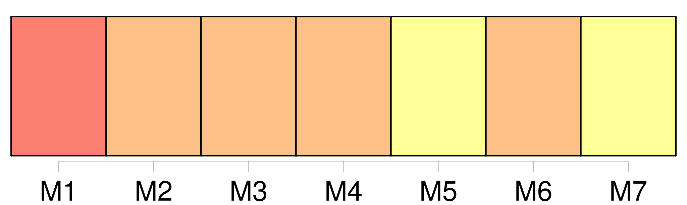

Longueur nb maillons : 114 mentions |
 |
Les observateurs, ces gens qui tiennent à savoir dans quel magasin vous achetez vos candélabres, ou qui vous demandent le prix du loyer quand votre appartement leur semble beau, avaient remarqué, de loin en loin, au milieu des fêtes, des concerts, des bals, des raouts donnés par la comtesse, l’ apparition d’ [un personnage étrange] [C’] était un homme.
La première fois qu’ [il] se montra dans l’ hôtel, ce fut pendant un concert, où [il] semblait avoir été attiré vers le salon par la voix enchanteresse de Marianina. [1 phrases]
[L’ inconnu] , [qui] se trouvait près de cette femme, s’ en alla. [1 phrases] j’ ai chaud, dit cette femme après le départ de [l’ étranger]
Et vous me taxerez peut-être de folie, mais je ne saurais m’ empêcher de penser que [mon voisin] , [ce monsieur vêtu de noir] [qui] vient de partir, causait ce froid. Bientôt l’ exagération naturelle aux gens de la haute société fit naître et accumuler les idées les plus plaisantes, les expressions les plus bizarres, les contes les plus ridicules sur [ce personnage mystérieux] Sans être précisément un vampire, une goule, un homme artificiel, une espèce de Faust ou de Robin des bois, [il] participait, au dire des gens amis du fantastique, de toutes ces natures anthropomorphes. [Il] se rencontrait çà et là des Allemands qui prenaient pour des réalités ces railleries ingénieuses de la médisance parisienne. [L’ étranger] était simplement un vieillard. Plusieurs de ces jeunes hommes, habitués à décider, tous les matins, l’ avenir de l’ Europe, dans quelques phrases élégantes, voulaient voir en [l’ inconnu] quelque grand criminel, possesseur d’ immenses richesses. Des romanciers racontaient la vie de [ce vieillard] , et vous donnaient des détails véritablement curieux sur les atrocités commises par [lui] pendant le temps qu’ [il] était au service du prince de Mysore. [1 phrases]
disaient -ils en haussant leurs larges épaules par un mouvement de pitié, [ce petit vieux] est une tête génoise! [7 phrases]
Enfin, par un singulier concours de circonstances, les membres de cette famille justifiaient les conjectures du monde, en tenant une conduite assez mystérieuse avec [ce vieillard] , [dont] la vie était en quelque sorte dérobée à toutes les investigations. [Ce personnage] franchissait [-il] le seuil de l’ appartement qu’ [il] était censé occuper à l’ hôtel de Lanty, [son] apparition causait toujours une grande sensation dans la famille. [1 phrases] Filippo, Marianina, madame de Lanty et un vieux domestique avaient seuls le privilége d’ aider [l’ inconnu] à marcher, à se lever, à s’ asseoir. Chacun [en] surveillait les moindres mouvements. Il semblait que [ce] fût une personne enchantée de qui dépendissent le bonheur, la vie ou la fortune de tous. [2 phrases] Caché pendant des mois entiers au fond d’ un sanctuaire inconnu, [ce génie familier] en sortait tout à coup comme furtivement, sans être attendu, et [apparaissait] au milieu des salons comme ces fées d’ autrefois qui descendaient de leurs dragons volants pour venir troubler les solennités auxquelles elles n’ avaient pas été conviées. [1 phrases] Mais, parfois, tout en dansant dans un quadrille, la trop naïve Marianina jetait un regard de terreur sur [le vieillard] [qu’] elle surveillait au sein des groupes. Ou bien Filippo s’ élançait en se glissant à travers la foule, pour [le] joindre, et restait auprès de [lui] , tendre et attentif, comme si le contact des hommes ou le moindre souffle dût briser [cette créature bizarre] La comtesse tâchait de s’ en approcher, sans paraître avoir eu l’ intention de [le] rejoindre ; puis, en prenant des manières et une physionomie autant empreintes de servilité que de tendresse, de soumission que de despotisme, elle disait deux ou trois mots auxquels déférait presque toujours [le vieillard] , [il] disparaissait emmené, ou, pour mieux dire, emporté par elle. Si madame de Lanty n’ était pas là, le comte employait mille stratagèmes pour arriver à [lui] ; mais il avait l’ air de s’ en faire écouter difficilement, et [le] traitait comme un enfant gâté dont la mère écoute les caprices ou redoute la mutinerie. [4 phrases]
[Ce vieux] , [qui] se cache et n’ [apparaît] qu’ aux équinoxes ou aux solstices, m’ a tout l’ air d’ un assassin … [20 phrases] Échappé de [sa] chambre, comme un fou de [sa] loge, [le petit vieillard] s’ était sans doute adroitement coulé derrière une haie de gens attentifs à la voix de Marianina, qui finissait la cavatine de Tancrède. [Il] semblait être sorti de dessous terre, poussé par quelque mécanisme de théâtre. Immobile et sombre, [il] resta pendant un moment à regarder cette fête, dont le murmure avait peut-être atteint à [ses] oreilles. [Sa] préoccupation, presque somnambulique, était si concentrée sur les choses qu’ [il] se trouvait au milieu du monde sans voir le monde. [Il] avait surgi sans cérémonie auprès d’ une des plus ravissantes femmes de Paris, danseuse élégante et jeune, aux formes délicates, une de ces figures aussi fraîches que l’ est celle d’ un enfant, blanches et roses, et si frêles, si transparentes, qu’ un regard d’ homme semble devoir les pénétrer, comme les rayons du soleil traversent une glace pure.
Ils étaient là, devant moi, tous deux, ensemble, unis et si serrés, que [l’ étranger] froissait et la robe de gaze, et les guirlandes de fleurs, et les cheveux légèrement crêpés, et la ceinture flottante. [1 phrases] Comme elle venait pour la première fois dans cette maison, je lui pardonnai son rire étouffé ; mais je lui fis vivement je ne sais quel signe impérieux qui la rendit tout interdite et lui donna du respect pour [son voisin] [1 phrases] [Le vieillard] ne voulut pas quitter cette délicieuse créature, à laquelle [il] s’ attacha capricieusement avec cette obstination muette et sans cause apparente, dont sont susceptibles les gens extrêmement âgés, et qui les fait ressembler à des enfants. Pour s’ asseoir auprès de la jeune dame, il [lui] fallut prendre un pliant. [Ses] moindres mouvements furent empreints de cette lourdeur froide, de cette stupide indécision qui caractérise les gestes d’ un paralytique. [Il] se posa lentement sur [son] siége, avec circonspection, et en grommelant quelques paroles inintelligibles. [Sa] voix cassée ressembla au bruit que fait une pierre en tombant dans un puits.
La jeune femme me pressa vivement la main, comme si elle eût cherché à se garantir d’ un précipice, et frissonna quand [cet homme] , [qu’] elle regardait, tourna sur elle deux yeux sans chaleur, deux yeux glauques qui ne pouvaient se comparer qu’ à de la nacre ternie. [2 phrases]
[Il] entend très-difficilement.
— Vous [le] connaissez donc? [1 phrases] Elle s’ enhardit alors assez pour examiner pendant un moment [cette créature sans nom] dans le langage humain, forme sans substance, être sans vie, ou vie sans action. [1 phrases] Quoique [le petit vieillard] eût le dos courbé comme celui d’ un journalier, on s’ apercevait facilement que [sa] taille avait dû être ordinaire. [Son] excessive maigreur, la délicatesse de [ses] membres, prouvaient que [ses] proportions étaient toujours restées sveltes. [Il] portait une culotte de soie noire, qui flottait autour de [ses] cuisses décharnées en décrivant des plis comme une voile abattue. Un anatomiste eût reconnu soudain les symptômes d’ une affreuse étisie en voyant les petites jambes qui servaient à soutenir [ce corps étrange] [1 phrases] Un sentiment de profonde horreur pour [l’ homme] saisissait le cœur quand une fatale attention vous dévoilait les marques imprimées par la décrépitude à cette casuelle machine. [L’ inconnu] portait un gilet blanc, brodé d’ or, à l’ ancienne mode, et [son] linge était d’ une blancheur éclatante. Un jabot de dentelle d’ Angleterre assez roux, dont la richesse eût été enviée par une reine, formait des ruches jaunes sur [sa] poitrine ; mais sur [lui] cette dentelle était plutôt un haillon qu’ un ornement. [1 phrases] Ce luxe suranné, ce trésor intrinsèque et sans goût, faisaient encore mieux ressortir la figure de [cet être bizarre] [6 phrases] Quelques vieillards nous présentent souvent des portraits plus hideux ; mais ce qui contribuait le plus à donner l’ apparence d’ une création artificielle [au spectre survenu devant nous] , était le rouge et le blanc dont [il] reluisait. Les sourcils de [son] masque recevaient de la lumière un lustre qui révélait une peinture très-bien exécutée. Heureusement pour la vue attristée de tant de ruines, [son] crâne cadavéreux était caché sous une perruque blonde dont les boucles innombrables trahissaient une prétention extraordinaire. Du reste, la coquetterie féminine de [ce personnage fantasmagorique] était assez énergiquement annoncée par les boucles d’ or qui pendaient à [ses] oreilles, par les anneaux dont les admirables pierreries brillaient à [ses] doigts ossifiés, et par une chaîne de montre qui scintillait comme les chatons d’ une rivière au cou d’ une femme. Enfin, [cette espèce d’ idole japonaise] conservait sur [ses] lèvres bleuâtres un rire fixe et arrêté, un rire implacable et goguenard, comme celui d’ une tête de mort. Silencieuse, immobile autant qu’ une statue, [elle] exhalait l’ odeur musquée des vieilles robes que les héritiers d’ une duchesse exhument de ses tiroirs pendant un inventaire. Si [le vieillard] tournait les yeux vers l’ assemblée, il semblait que les mouvements de ces globes incapables de réfléchir une lueur se fussent accomplis par un artifice imperceptible ; et quand les yeux s’ arrêtaient, celui qui les examinait finissait par douter qu’ ils eussent remué. Voir, auprès de ces débris humains, une jeune femme dont le cou, les bras et le corsage étaient nus et blancs ; dont les formes pleines et verdoyantes de beauté, dont les cheveux bien plantés sur un front d’ albâtre inspiraient l’ amour, dont les yeux ne recevaient pas, mais répandaient la lumière, qui était suave, fraîche, et dont les boucles vaporeuses, dont l’ haleine embaumée semblaient trop lourdes, trop dures, trop puissantes pour cette ombre, pour [cet homme en poussière] ; ah!! [2 phrases] — [Il] sent le cimetière, s’ écria la jeune femme épouvantée qui me pressa comme pour s’ assurer de ma protection, et dont les mouvements tumultueux me dirent qu’ elle avait grand’peur. [1 phrases] Si je [le] regarde encore, je croirai que la mort elle -même est venue me chercher.
Mais vit [-il] ? Elle porta la main sur [le phénomène] avec cette hardiesse que les femmes puisent dans la violence de leurs désirs ; mais une sueur froide sortit de ses pores, car aussitôt qu’ elle eut touché [le vieillard] , elle entendit un cri semblable à celui d’ une crécelle. [12 phrases]
Vous prenez [un petit vieillard] pour un spectre. [30 phrases] Nous vîmes entrer la jeune Marianina, plus brillante encore par son expression d’ innocence que par sa grâce et par sa fraîche toilette ; elle marchait alors lentement, et tenait avec un soin maternel, avec une filiale sollicitude, [le spectre habillé] [qui] nous avait fait fuir du salon de musique ; elle [le] conduisit en [le] regardant avec une espèce d’ inquiétude posant lentement [ses] pieds débiles. [3 phrases]
Avant de confier [le vieillard] à ce gardien mystérieux, la jeune enfant baisa respectueusement [le cadavre ambulant] , et sa chaste caresse ne fut pas exempte de cette câlinerie gracieuse dont le secret appartient à quelques femmes privilégiées. [3 phrases] [Le vieillard] , frappé subitement par quelque souvenir, resta sur le seuil de ce réduit secret. Nous entendîmes alors, grâce à un profond silence, le soupir lourd qui sortit de [sa] poitrine : [il] tira la plus belle des bagues dont [ses] doigts de squelette étaient chargés, et la [plaça] dans le sein de Marianina. [155 phrases]
— Mais, me dit madame de Rochefide en m’ interrompant, je ne vois encore ni Marianina ni [son petit vieillard]
— Vous ne voyez que [lui] , m’ écriai -je impatienté comme un auteur auquel on fait manquer l’ effet d’ un coup de théâtre. [334 phrases]
— Mais, me dit madame de Rochefide, quel rapport existe-t -il entre cette histoire et [le petit vieillard] [que] nous avons vu chez les Lanty? |

|
Il est possible de télécharger la ressource sur la page Ortolang |
Si vous avez des questions ou vous voyez des erreurs, merci d'envoyer un mail à silvia.federzoni89@gmail.com |